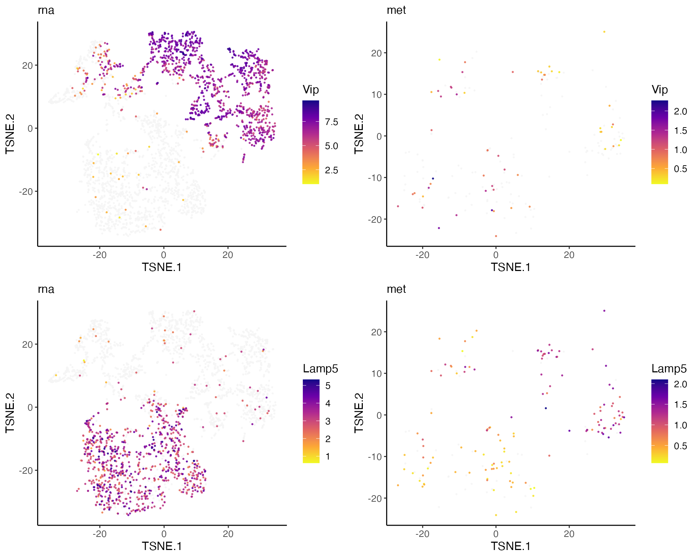
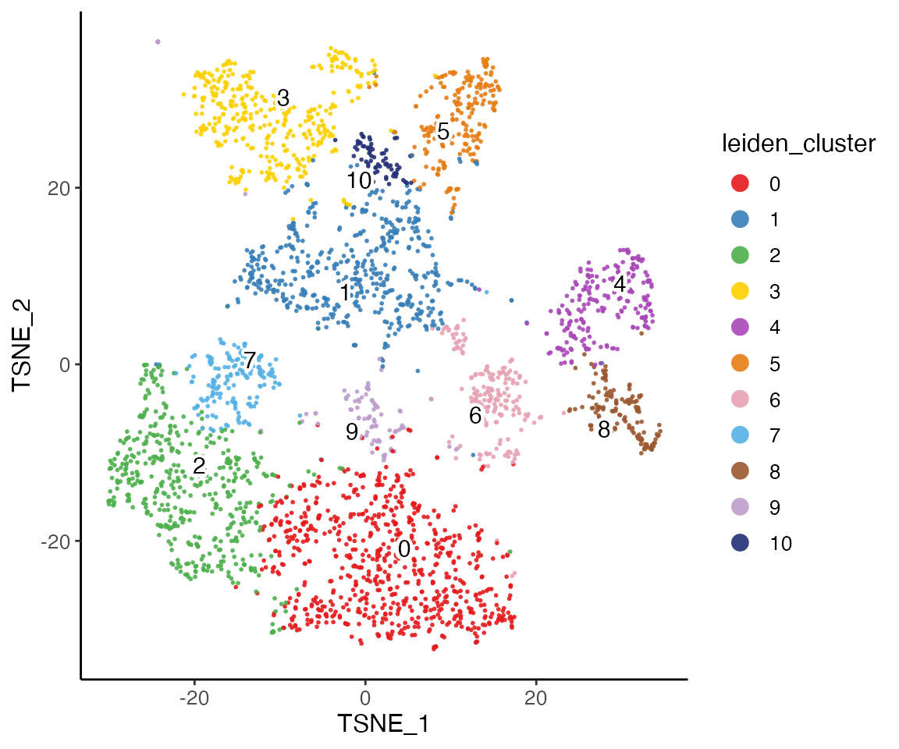
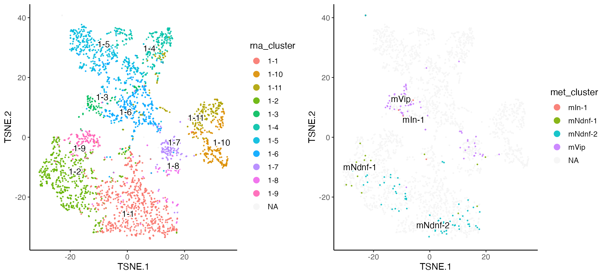
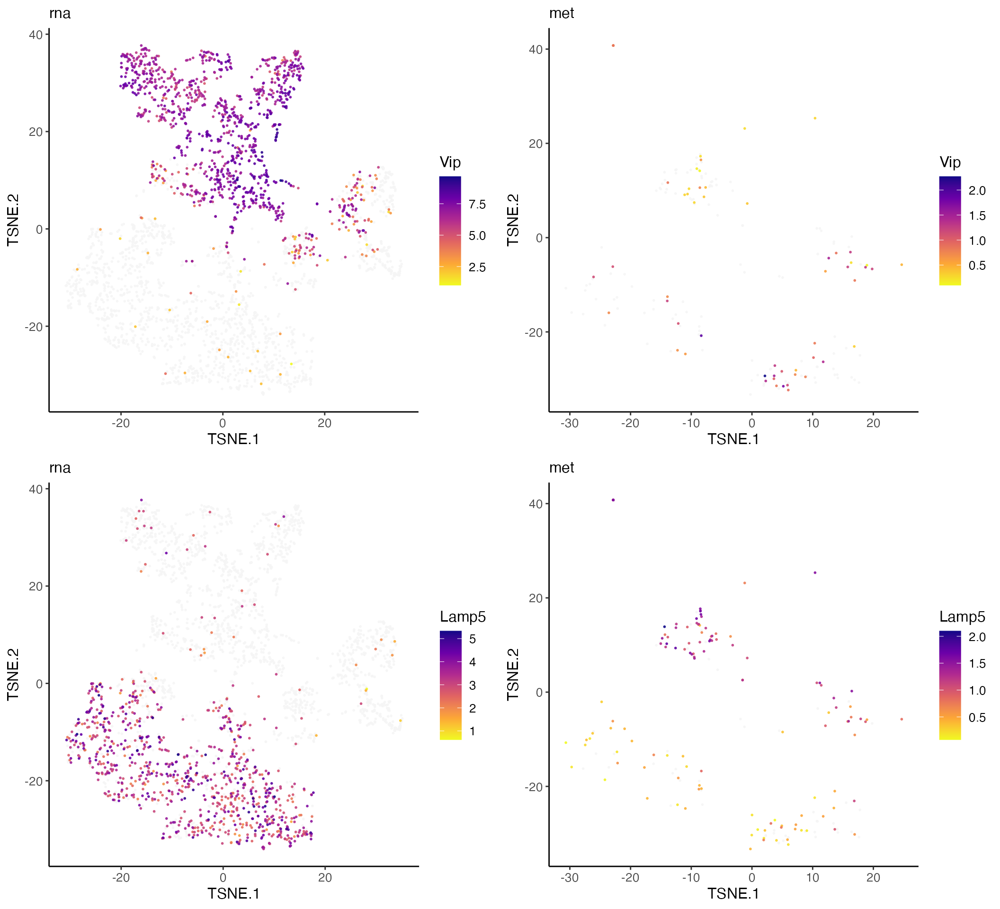

Jointly Defining Cell Types from Single-Cell Gene Expression and Methylation Data Using LIGER
Joshua Welch
4/19/2023
Source:vignettes/articles/rna_methylation.Rmd
rna_methylation.RmdIntroduction
This vignette shows how to use LIGER to jointly define cell types from single-cell gene expression and DNA methylation. We will be using scRNA-seq and single-nucleus DNA methylation data from mouse cortex. These are the same datasets used in our previous paper. The steps involved are quite similar to those for integrating multiple RNA datasets. The only differences are (1) we process the methylation data into gene-level values comparable to gene expression, (2) we perform gene selection using the RNA data only, and (3) we both scale and center the factor loadings before performing quantile normalization.
The full dataset used in the paper is quite large, so in this example, we restrict our attention to inhibitory interneurons derived from the caudal ganglionic eminence (CGE). We downloaded the gene-level methylation data provided by the Ecker lab. They generated these values by dividing the numbers of methylated (non-CG methylation, mCH) and detected positions across the gene body within each cell. They and we found these gene body mCH proportions to be negatively correlated with gene expression level in neurons. The gene expression data is from Saunders et al. 2018. The full dataset is available for download through Dropviz. For convenience, we provide the gene x cell count matrices for only CGE interneurons as well as the original cluster assignment obtained from the study:
- RNA data with 18,455 genes by 2,927 cells mouse_frontal_cortex_cge_rna.RDS
- RNA data cluster assignment rna_clusters.RDS
- Methylation data with 31,928 genes by 184 cells mouse_frontal_cortex_cge_met.RDS
- Methylation data cluster assignment met_clusters.RDS
Create liger object and preprocess data
We then create a liger object using the methylation and expression data.
library(rliger)
rna.met <- createLiger(list(rna = rna, met = met), modal = c("rna", "meth"))Alternatively, we build the importing function to directly pull datasets from online storage and build the liger object.
# NOT RUN
rna.met <- importCGE()The selectGenes() function performs variable gene
selection on each of the datasets separately, then takes the union of
the result. The variable genes are selected by comparing the variance of
each gene’s expression to its mean expression. The
selectGenes() function was written primarily scRNA-seq in
mind, and the methylation data distribution is quite different. So
instead of taking the union of variable genes from RNA and methylation,
we set useDatasets = "rna" in the function to perform gene
selection using only the RNA dataset.
Because gene body mCH proportions are negatively correlated with gene
expression level in neurons, we need to reverse the direction of the
methylation data, by simply subtracting all values from the maximum
methylation value per selected dataset. The resulting values are
positively correlated with gene expression. In addition, the
proportional nature of the gene body methylation makes it unnecessary to
normalize and scale the methylation data. By setting argument
modal in createLiger(), we’ve already marked
that we need to take such actions on the methylation dataset, and the
function scaleNotCenter() will automatically have this done
properly.
Optionally, reverseMethData() explicitly does the
reversing operation on specified datasets if the datasets are not
initially marked as methylation data.
rna.met <- rna.met %>%
normalize() %>%
selectGenes(useDatasets = "rna") %>%
scaleNotCenter()Factorize and perform quantile normalization
Next we perform integrative non-negative matrix factorization (iNMF)
in order to identify shared and distinct metagenes across the datasets
and the corresponding metagene loadings for each cell. The most
important parameters in the factorization are k (the number
of factors) and lambda (the penalty parameter which limits
the dataset-specific component of the factorization). The default value
lambda = 5 usually provides reasonable results for most
analyses. For this analysis, we simply use k = 20 and the
default value of lambda.
rna.met <- runIntegration(rna.met, k = 20)Using the metagene factors calculated by iNMF, we then assign each cell to the factor on which it has the highest loading, giving joint clusters that correspond across datasets. We then perform quantile normalization by dataset, factor, and cluster to fully integrate the datasets. To perform this analysis, typing in:
rna.met <- quantileNorm(rna.met)The quantileNorm() function gives joint clusters that
correspond across datasets. However, if desired, after quantile
normalization, users can additionally run the Leiden algorithm for
community detection, which is widely used in single-cell analysis and
excels at merging small clusters into broad cell classes. This can be
achieved by running the runCluster() function. Several
tuning parameters, including resolution,
nNeighbors, and prune control the number of
clusters produced by this function.
rna.met <- runCluster(rna.met, nNeighbors = 30)Visualize results
We run t-SNE on the normalized factors, then color the t-SNE coordinates by dataset and cluster.
rna.met <- runTSNE(rna.met)
plotDatasetDimRed(rna.met)
plotClusterDimRed(rna.met, legendNCol = 1)
The t-SNE plot shows that the datasets align well and indicates the jointly inferred clusters. Using the original RNA and methylation cluster assignments, we can visually confirm that the joint analysis is highly consistent with the single-modality analyses.
First, we insert the original cluster assignment into “cellMeta” variables. The cell metadata table contains variables that apply to all datasets together. Partial insertion of values for part of all datasets requires cell index specification to ensure the correctness.
# `rna_clusts` is a named factor object, and the names match with `colnames(rna)`
# However, a prefix of `"datasetName_"` is appended when creating the liger object
names(rna_clusts) <- paste0("rna_", names(rna_clusts))
# `rna_clusts` contains all cells from the original study while we only deal
# with the CGE interneurons in this vignette.
# Use `drop = TRUE` to omit unexisting categories in the resulting subset.
rna_clusts <- rna_clusts[names(rna_clusts) %in% colnames(rna.met), drop = TRUE]
# Use `columns` to name the new variable in metadata
cellMeta(rna.met, columns = "rna_cluster", cellIdx = names(rna_clusts)) <- rna_clusts
# Similarly
names(met_clusts) <- paste0("met_", names(met_clusts))
met_clusts <- met_clusts[names(met_clusts) %in% colnames(rna.met), drop = TRUE]
cellMeta(rna.met, columns = "met_cluster", cellIdx = names(met_clusts)) <- met_clustsThen, we can visualize with these variables. Note that “NA” values on the plot indicate the cells belong to the other dataset.
rnaPlot <- plotClusterDimRed(rna.met, useCluster = "rna_cluster", legendNCol = 1)
metPlot <- plotClusterDimRed(rna.met, useCluster = "met_cluster")
cowplot::plot_grid(rnaPlot, metPlot)
Plotting marker genes for subtypes of CGE interneurons confirms that the data types are properly aligned, with the expected inverse relationship between gene body mCH and gene expression.
plots <- plotGeneDimRed(rna.met, c("Vip", "Lamp5"), splitBy = "dataset",
titles = c(names(rna.met), names(rna.met)))
cowplot::plot_grid(plotlist = plots, nrow = 2)